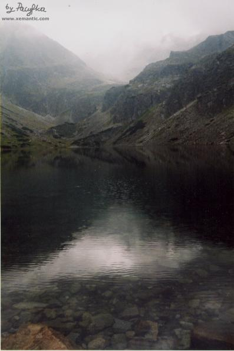
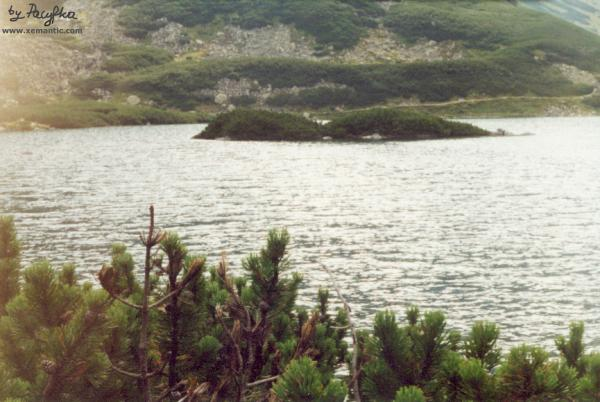
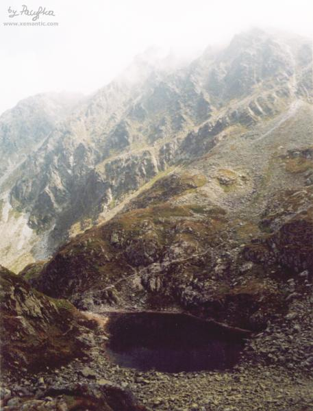
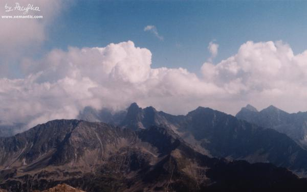

|
Stanisław Witkiewicz (1851-1915)
Na przełęczy (fragment - Droga na Zawrat)
Wielka, granatowa,
prawie czarna tafla stawu leży pod nawisłymi nad nią z prawej strony
ciemnymi skałami; w głębi ponad szary próg kamienny wystają wysokie,
ostre wirchy, na lewo olbrzymie szare rumowisko skalne, poplamione
rudymi mchami, zielenią szuwarów i ciemnymi krzakami kosówki.
Perć idzie ponad stawem. Patrząc z góry na jego powierzchnię widać
przez płytką wodę pobrzeża dno zawalone kamieniami, świecącymi spod
błękitnego przeżrocza jak zatopione odłamy lodu. Dalej ku środkowi cień
tajemniczy gęstnieje, aż w koncu przechodzi w mrok nocy, która zdaje
się drzemać tam, zatopiona w nieprzejrzanych głębiach.
Gładka, równa i miękka jego toń jest tak inną , tak rożną od
chropowatego, twardego, najeżonego otoczenia, że nie można się nigdy z
tym kontrastem oswoić, nie można bez podziwu i przyjemności przenosić
wzroku z jednego zjawiska na drugie. Wrażenie, ktore sie tu odbiera,
wywołuje wspomnienie jakiejś muzyki , kołyszącej i budzącej umysł na
przemian dwoma różnymi motywami melodii, powtarzającymi się kolejno bez
końca..
|

Czarny Staw Gąsienicowy, fot. Pacyfka
|
| 
|
Czarny Staw Gąsienicowy
fot. Pacyfka
|
Przez płat śniegu, leżący miedzy dwoma
poczerniałymi odłamami skały, wchodzimy w kotlinę, otoczoną dookoła
pustynnymi, ciemnymi scianami, rumowiskami skał zgruchotanych, wielkimi
głazami, oderwanymi od szczytów. Jest to zupełna dzicz kamiennej
pustyni , ledwie gdzieniegdzie przerywana bladą zielenią upłazków i
suchymi porostami.
Zewsząd zbliżają się ku sobie wielkie turnie, czarne, żłobkowane
drogami wód, ciągnącymi się pionowo z góry na dół, jak pełzające po
cielsku góry węże.Od strony północnej czarna skała zachodzi w górę,
zasłania świat, zimna, bezpłodna i surowa. Od południa słóńce zamienia
granitowy mur w jakąś przeźroczystą zasłonę tak lekką, iż się zdaje, że
ją wiatr uniesie. Ślizgające się promienie czepiają się występów skały,
błyszczą w źródliskach jak diamenty, wszytych w gazę oparu
przejrzystego; cienie od turni szczerbatych fałdują błękitnawymi
smugami subtelną tkankę światła unąszącego się w powietrzu.
Po ciemnych źlebach leżą białe płaty sniegów: gdzieniegdzie słońce
rzuca na nie blask ślepiący , a niebo barwi cienie na ciemny szafir.
Zapadły w głębokie zręby granitu dysze chłodem Zmarzły Stawek. Ponad
ciemnoseledynową jego wodą wyzierają białe jak śnieg odłamy skał....
|

"Zapadły w głębokie zręby granitu dysze chłodem Zmarzły Stawek."
fot.Pacyfka
|
Przed nami w górę szedł skalny korytarz miedzy dwiema czarnymi ścianami granitu....
Jeszcze jedno dość ,,śtyrbne" (czyli strome) miejsce i
nagle.......doznaje się wrażenia, że z chłodnej i ciemnej piwnicy coś
wyniosło i rzuciło w błękity nieba i blaski słoneczne.
Ciepły, miękki wiatr obwiewa twarze , oczy lecą gdzieś w dal, szukając
oparcia; człowiek zdaje się wisieć nad odchłanią, twarzą w dół.
|

Widok z Zawratu
fot. Pacyfka
|
|
|